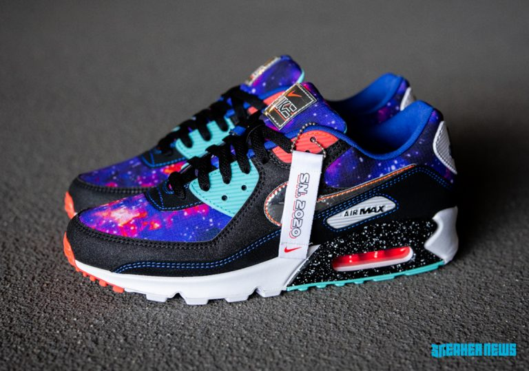
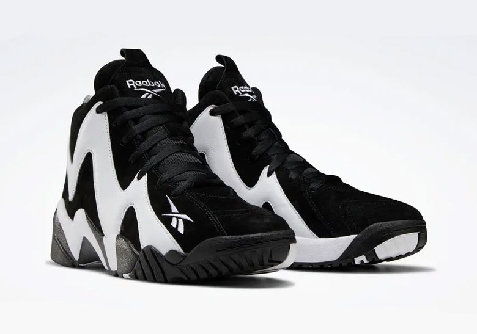
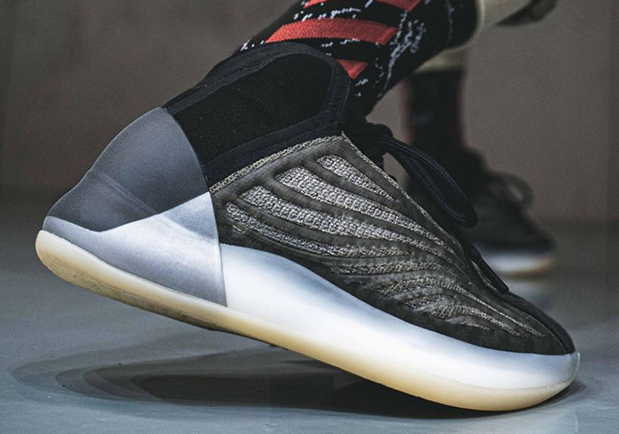

Giữa tháng 6 là thời điểm các ông lớn trong ngành sản xuất giày thể thao tập trung cho ra mắt các phiên bản mang đậm phong cách vũ trụ huyền bí. Hãy cùng ELLE Man điểm qua 5 phát hành giày thể thao ấn tượng sắp ra mắt từ ngày 18 đến 25/6/2020!
Ngày phát hành : 18/6
Giá bán lẻ tham khảo: 400 USD
Trong tháng 6 này, Nike tiếp tục thay áo mới cho đôi giày công nghệ cao nhất tính đến hiện tại là Nike Adapt Auto Max “Anthracite”. Thân giày được tạo hình với các đường nét không chút rườm rà.

Chi tiết sản phẩm
Ngày phát hành : 19/6
Giá bán lẻ tham khảo: đang cập nhật
Cuối tháng 6 này, Nike mang cả ngân hà huyền ảo vào trong pack giày Nike Air Max “Supernova 2020”. Pack này bao gồm ba kiểu dáng cổ điển Air Max 90, Air Max Plus và Air Max 270 React hiện đại.
Chi tiết sản phẩm
Ngày phát hành : 19/6
Giá bán lẻ tham khảo: 120 USD
Nếu là một người đam mê sneakers chắc chắn bạn đã từng nghe đến Foot locker – cửa hàng bán lẻ giày thể thao nổi tiếng tại Mỹ. Được thành lập vào năm 1974, Foot locker có trụ sở chính đặt tại Manhattan, New York và có chi nhánh tại hơn 20 quốc gia.

Chi tiết sản phẩm
Ngày phát hành : 19/6
Giá bán lẻ tham khảo: 130 USD
Đôi giày signature nổi tiếng của siêu sao NBA 1 thời Shaw Kemp – Reebok Kamikaze II mới chính thức trở lại từ năm 2013.
Chi tiết sản phẩm
Ngày phát hành : 25/6
Giá bán lẻ tham khảo: 250 USD
Sau khi hai phối màu đầu tiên của adidas Yeezy Quantum được phát hành vào tuần lễ NBA All Star vừa rồi, thiết kế giày bóng rổ của Kanye West sẽ một lần nữa quay lại với phối màu hoàn toàn mới – adidas Yeezy Quantum “Barium” vào mùa Hè này.
Chi tiết sản phẩm
Mẫu giầy 2
.Mẫu giầy 3
.Mẫu giầy 4
.Mẫu giầy 5
.